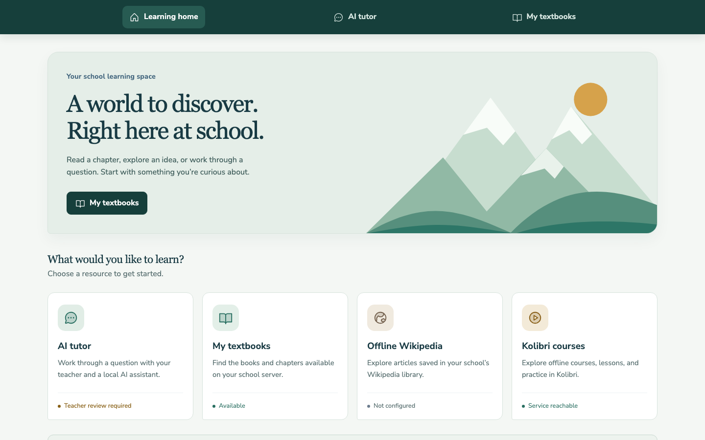
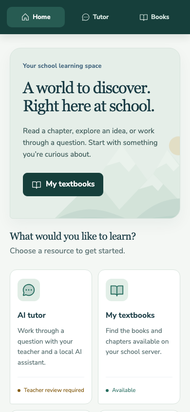

A library that stays nearby
Approved textbooks and notes, organized by grade and subject, with local file access.
Open-source project / software foundation
A school library, lessons, and a carefully supervised AI tutor. Hosted at school. Reached over Wi-Fi. Built for places where the internet cannot be taken for granted.
Under development. School deployment and real-model educational review are still ahead.
The approach
The school server does the work. A phone, laptop, or classroom display opens the same local website. After provisioning, the library stays inside the school network. An optional hosted AI provider needs internet access and receives the learner's question and relevant conversation context; a local Ollama provider keeps chat on the LAN.
Approved textbooks and notes, organized by grade and subject, with local file access.
Local model answers with retrieved page references. Optional, teacher supervised, and off by default.
Connect verified Kiwix collections and run Kolibri as an optional education service. Import reviewed channels in Kolibri; a link alone does not mean content is ready.
A working prototype
These are real captures of the running learner app. The interface is ready for review; course content, teacher setup, and school field testing are still in progress.


Inside the school network
Student access and staff administration have different jobs. Chat can use local Ollama or a configurable OpenAI-compatible provider, with its data path made explicit.
Proposed topology: management VLAN 10, student VLAN 20, services VLAN 30. Actual hardware configuration and school-network validation are pending.
The build plan
A working interface is the beginning. Real sources, safe access, teacher review, and recovery tests are the gates that follow.
React + FastAPI, English/Nepali interface, protected chapter import, page-aware retrieval, containers, and automated workflow tests.
Configure the selected chat provider and local retrieval services. Import an approved chapter. Check cited answers, no-match cases, and Nepali quality.
Test phones with WAN and cellular off. Verify staff isolation, downloaded articles/video, library capacity, and model latency separately.
Review educational safety, train operators, test backups and UPS recovery, and keep AI disabled if its review does not pass.
What the code has proved
Automated tests exercise the application and its failure states. They do not establish educational quality or replace a physical offline demonstration.
API and ingestion workflowsAuthorization, files, page boundaries, filters, outages, and bounded concurrency.
Retrieval protocol checkedQdrant storage and filtered retrieval were tested with a disposable service; no Qdrant endpoint is configured in the current local stack.
Desktop and mobile browser flowsStaff import to textbook to tutor, language switching, and useful failure states.
School and curriculum acceptance pendingTeacher and Nepali review, WAN-off testing, school hardware, and power recovery.
The public repository contains code, reproducible setup, and implementation documentation. School records, credentials, and original internal planning materials stay out of Git.